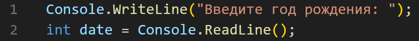
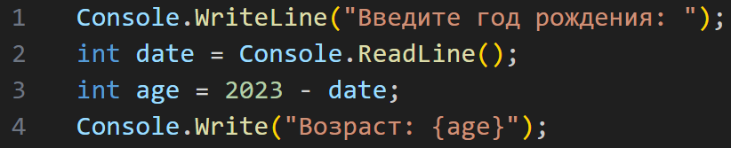

главная
лекции
задания
главная
лекции
задания
Для того, чтобы решать задачи, нам нужно ознакомиться с арифметическими операторами. Разбирать операторы будем на примере задачи из прошлой лекции: необходимо узнать возраст пользователя.
Оператором в программировании называют команду, обозначающую математическое или логическое действие с данными. Например, знаки “+” и “-” являются операторами. Операндами называют данные, которые обрабатываются командой. Например, в выражении 3+2 числа 3 и 2 являются операндами.
Итак, решим простую задачу: попросим у пользователя ввести год рождения и найдем его возраст. Для этого напишем такой код (о правилах ввода и вывода данных вы можете прочитать в прошлой лекции):
Далее вычтем из текущего года год рождения пользователя:
В программировании по аналогии с обычными математическими вычислениями порядок действий в выражении определяется следующим образом:
1. Степени/корни в скобках
2. Умножение/деление в скобках
3. Сложение/вычитание в скобках
4. Степени/корни
5. Умножение/деление
6. Сложение/вычитание
Список всех операторов языка C#:

Операторы +, –, * и / действуют так, как предполагает их обозначение. Их можно применять к любому встроенному числовому типу данных. Остаток от деления можно получить с помощью оператора деления по модулю (%), который иначе называется оператором вычисления остатка. Он дает остаток от целочисленного деления. Например, 13 % 3 равно 1. Оператор инкремента (++) увеличивает число на 1, а оператор декремента (--) уменьшает число на 1. Следовательно, операторы:
x++;
x—;
равнозначны операторам:
x = x +1;
x = x -1.